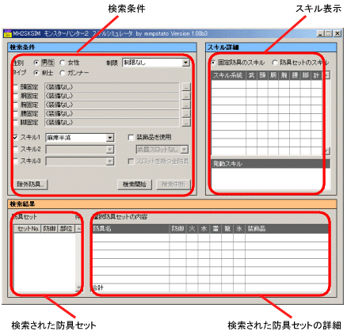
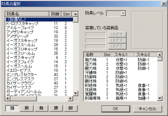
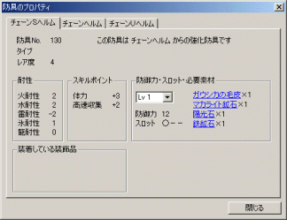

本プログラムは、モンスターハンター２に対応したスキルの表示・検索を行なうツールです。
フリーウェアですが、著作権は当方にあります。
| ● 動作環境 | ||||
|
左記以外の環境での動作確認はしていません。 また、左記環境を満たしているとしても、全てのパソコン環境において動作を保証することはできませんで、ご了承ください。 |
|||
| ● ダウンロードとインストール | ||||
MH2SKSIM100b5.zip |
左のアイコンをクリックしてダウンロードしてください。 ダウンロードファイルは ZIP 形式の圧縮ファイルとなっています。適当なフォルダを作成してプログラムファイルをその中に解凍すれば、インストールは完了です。 Windows XP の場合は、直接 ZIP ファイルを開いて適当なフォルダへプログラムファイルを取り出します。 アンインストールは、プログラムファイルを削除するだけで完了です。レジストリは使用していません。 一度起動すると、プログラムファイルと同じフォルダに MH2SKSIM.ini ファイルが作成され、この中に各種設定が保存されます。 |
|||
| ● 画面の説明 | ||
|  | 起動すると、左図のような画面が表示されます。 画面は大別して３つのフレームに分かれています。 ●検索条件フレーム 性別、タイプ、制限 プレイヤーの性別、装備タイプ、モード（シングル・ネットワーク）やHRによる制限を指定します。指定内容と合わない防具は表示・検索されません。 固定防具 選択した防具によって発動するスキルを確認する場合は、ここで防具を指定すれば、スキル表示フレームにスキル詳細値が表示されます。 右端にあるボタンを押すと防具選択画面が表示されるので、防具を選択します。 スキル検索の場合は、固定したい部位の防具を選択した後、左端のチェックボックスでチェックしておくと、その部位は指定の防具で固定された防具セットが検索されます。 スキル１〜３ スキル検索をする場合、ここで検索したいスキルを指定します。チェックをつけたもののみが有効です。複数指定した場合はAND検索となります。 装飾品を使用 防具だけでは発動しにくいスキルを検索する場合はチェックします。チェックすると、指定スキルが発動するように防具に装飾品を装着して検索を行ないます。 武器スロット数 装飾品を使用する場合、武器スロットも使用するかを指定します。武器のスロット数を選択してください。 スロットを持つ全防具 装飾品を使用する場合、スロットを持つ全ての防具を検索対象にするかどうかを指定します。ここをチェックすると膨大な検索時間を要するのでご注意ください。 除外設定 除外したい防具や装飾品がある場合は、このボタンを押すと除外選択画面が表示されるので指定します。除外指定された防具や装飾品は、他の画面には一切表示されなくなり、スキル検索においても検索対象からはずされます。 検索開始・検索中断ボタン 『検索開始』 ボタンを押すと、指定したスキルによる防具セットの検索を開始します。検索された防具セットは順次検索結果フレームに追加されていきます。 検索を途中で中断する場合は、『検索中断』 ボタンを押します。 設定の保存 ここまでの設定内容は、プログラム終了時に自動的に保存されます。何らかの理由で保存したくない場合は、コントロールキーを押しながら終了すると、保存せずに終了します。 ●スキル表示フレーム 固定防具、または検索された防具セットのスキル詳細値を表示します。フレーム上部のオプションボタンでどちらのスキルを表示するのかを指定します。 固定防具を選択した時と、防具セット番号を選択した時には、自動的に対応する方に切り替わります。 ●検索結果フレーム 検索された防具セット番号を表示します。セット番号を選択すると、その防具セットの詳細が右に表示されます。 |
|
| ● 固定防具の選択 | ||
|  | 固定防具表示部の右端にある５つのいずれかのボタンを押すか、防具名部分をダブルクリックすると左図のような防具選択画面が表示されます。 指定したい防具と、必要に応じて防具レベル・装着する装飾品を選択します。 ここで表示される防具・装飾品は、検索条件フレームにて指定した性別・タイプ・制限に合致するもののみとなります。 |
|
| ● 防具のプロパティ | ||
|  | 各画面で表示される防具名上で右クリックし、ポップアップメニューから 『プロパティ』 を選択すると、左図のように、防具の情報画面が表示されます。 その防具の下位モデル、上位モデルなど関連する防具がある場合は、それらの防具の情報も同じ画面で見ることができます。 必要素材名をクリックすると、当サイトのアイテム詳細画面がブラウザによって開かれます。 |
|
| ● 防具セットの保存・読出し | ||
| 気にいった防具セットが見つかったら、それをファイルに保存しておくことができます。 『防具セットの詳細』 で右クリックしてポップアップメニューから 『防具セットの保存』 を選択し、適当なファイル名をつけて保存します。保存されたファイルはテキストファイルなので、メモ帳などで開くことができます。 保存したファイルは固定防具として読み込むことができます。固定防具名上で右クリックしてポップアップメニューから 『防具セットの読込み』 を選択します。 ファイルの１行目には防具セットの情報が記述されています。ここを改変したりすると読み込めなくなるのでご注意ください。２行目以降は、読込みには関係ありません。 |
||
| ● スキル検索について | ||
| 指定したスキルが発動するような防具セットを検索しますが、検索の対象となる防具は、原則として指定したスキルのスキルポイント値がプラスであるもののみとなります。（装飾品も同様） 例として『麻痺無効』を指定した場合、麻痺スキルポイント値がプラスの防具のみをピックアップし、それらの防具の組み合わせで検索を行ないます。 『装飾品使用』 を指定した場合でも、通常は麻痺スキルポイントを持っていない防具に装飾品を装着し、麻痺スキルポイントを持たせたような防具は検索されませんが、『スロットを持つ全防具』を指定した場合は、このような防具も検索対象になります。この場合、検索に膨大な時間を要するので、通常は、このような防具を自分で決めて固定防具として指定しておくのをお勧めします。 『装飾品使用』 を指定して検索する場合、固定防具に空きスロットがあれば、そのスロットも使用するようになります。必要に応じてスロットを空けておいて下さい。 |
||
| ● 検索結果が多すぎる場合は | ||
| 固定防具を指定する 指定したスキルによっては、膨大な数の防具セットが検索されます。 どれかの部位を固定防具に指定しておけば、その部位は固定された防具セットが検索されるようになるので、検索結果数を少なくすることができます。 防具セット詳細に表示された防具名を右クリックし、表示されるポップアップメニューから『固定防具にセットする』を選ぶことによって固定防具に設定されるので、再度検索を行ないます。このようにして、防具セットの絞込みを行なってください。 ４つ以下の部位で発動すると思われるスキルの場合は、任意の部位を 『装備なし』 とした固定防具を指定すれば、その部位は使用しない防具セットを検索することができます。 固定防具を指定した検索を行なう場合は、『固定』チェックボックスをチェックしておく必要があるのでご注意ください。 除外防具を指定する 防御力が低いとか、見た目が気に入らないような防具などは除外指定しておくことで、検索結果を少なくすることができます。 |
||
| ● 不具合について | ||
| 本プログラムはベータバージョンのため、まだ不具合が残っている可能性があります。 何か不具合を発見した場合は、詳細を報告いただければ幸いです。 改善点などの要望も含め、お問い合わせからお送りください。 以下の問題点は、バージョン 1.00b4 で解決したと思われます。 問題点１ 複数のスキルを指定、かつ装飾品の使用を指定した場合、存在するはずの防具セットを見つけられない場合があります。この場合は、指定するスキルの順番を変えてみると、見つけられることがあります。（例えば、スキル１をスキル２に、スキル２をスキル１に指定しなおしてみる） これは、装飾品の装着の順番がスキル指定の順番に依存してしまっていることによります。 この問題は、空きスロットに余裕があれば起こらないと思われます。 問題点２ 複数のスキルを指定した場合、どちらか一方が発動していない防具セットが検索される場合があります。これは、検索中に装飾品を装着する処理において、一方のスキルを補おうとして装着した装飾品が、他方のスキルのマイナスポイントを持っていた場合に起こります。現在、対応中です。 |
||
| ● 修正履歴 | ||||||||||||
|
||||||||||||